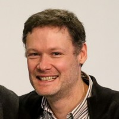
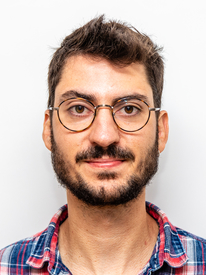

Team
People
The people behind the CLINOM-X project.
Project Promotor & Advisor
Project Lead
Prof. Sébastien Jodogne
Project Promotor & Advisor
UCLouvain — ICTEAM
Professor of computer science applied to life sciences at UCLouvain (ICTEAM / EPL). His research focuses on health informatics, medical imaging, deep learning, federated learning, and computer vision. He is the author of Orthanc, an open-source ecosystem for medical imaging (DICOM).
Researchers & Engineers
Core Team

François Roucoux
Main Project Investigator & Doctoral Researcher
UCLouvain — ICTEAM
Medical doctor and computer scientist, currently pursuing a PhD thesis at ICTEAM (UCLouvain) in the field of rare diseases screening and diagnosis. Head of Medical Information Technology at CHU de Charleroi, with expertise in health informatics, clinical decision support, and medical AI.
Molka Anaghim Ftouhi
Software Engineer
UCLouvain — ICTEAM
Software engineer and bioinformatics developer at UCLouvain. She holds an engineering degree from ENET'Com (Sfax, Tunisia) She develops the web applications and data management tools of the CLINOM-X platform.

Donatien Schmitz
Postdoctoral Researcher
UCLouvain — ICTEAM
Postdoctoral researcher in the Cloud and Large Scale computing group at UCLouvain (ICTEAM). His research focuses on distributed systems, stream processing, and capacity planning. He holds an MSc and PhD in computer science from UCLouvain, with published work on hybrid batch-stream workloads and elastic scaling for distributed stream processing.